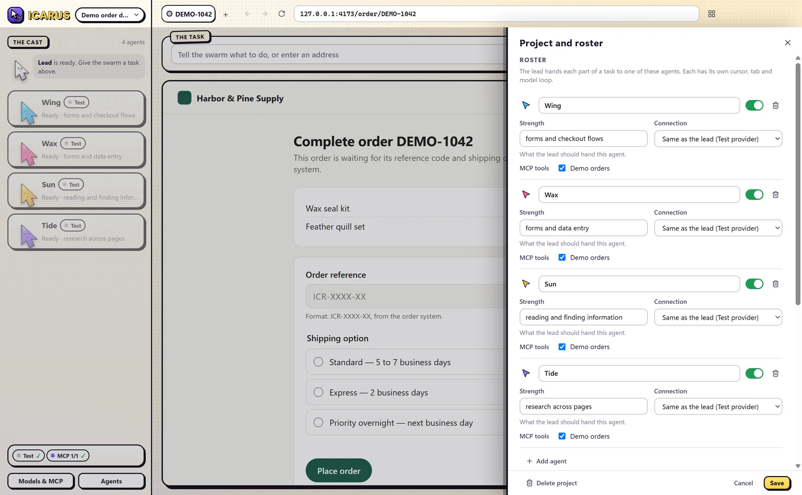
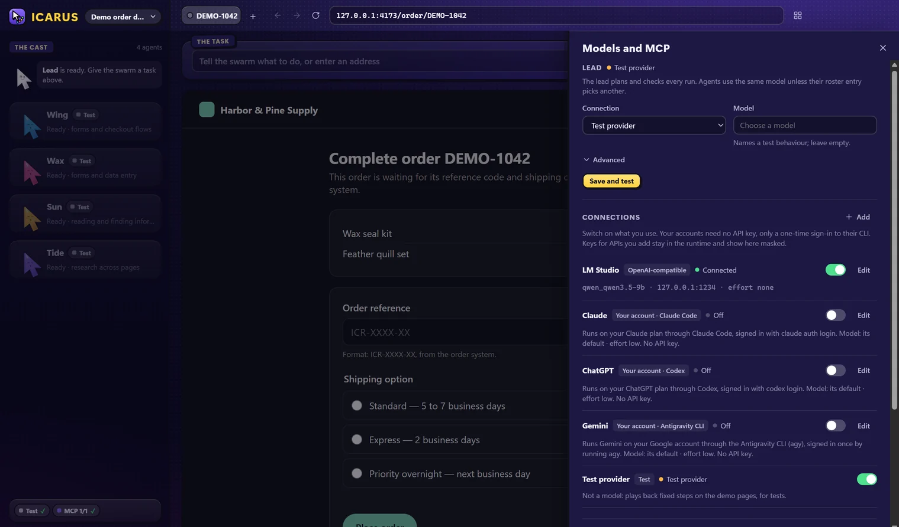
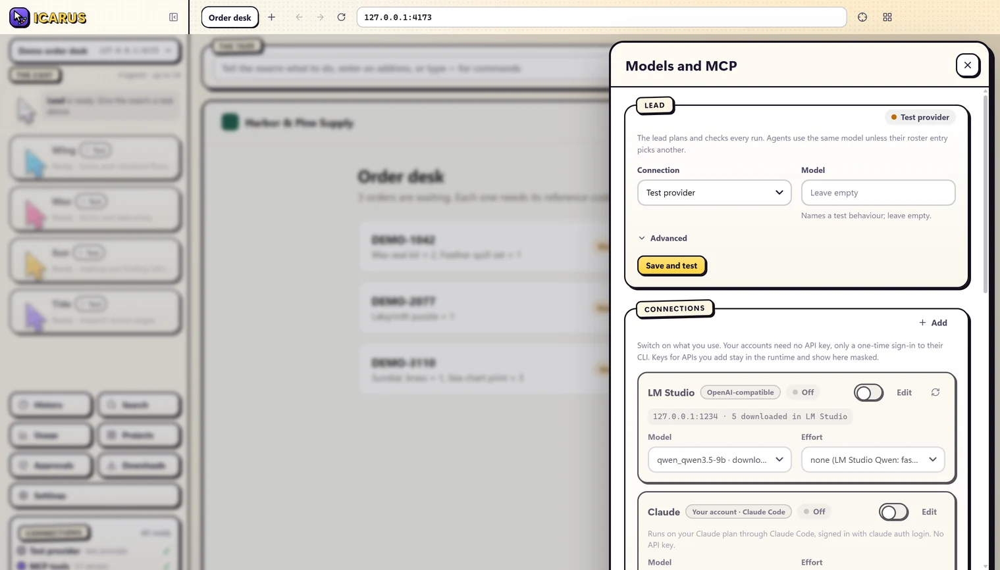
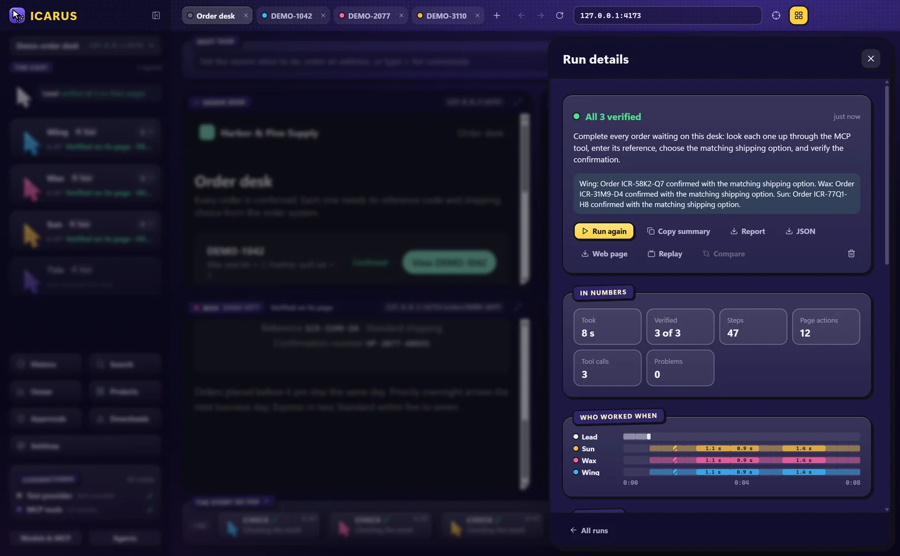
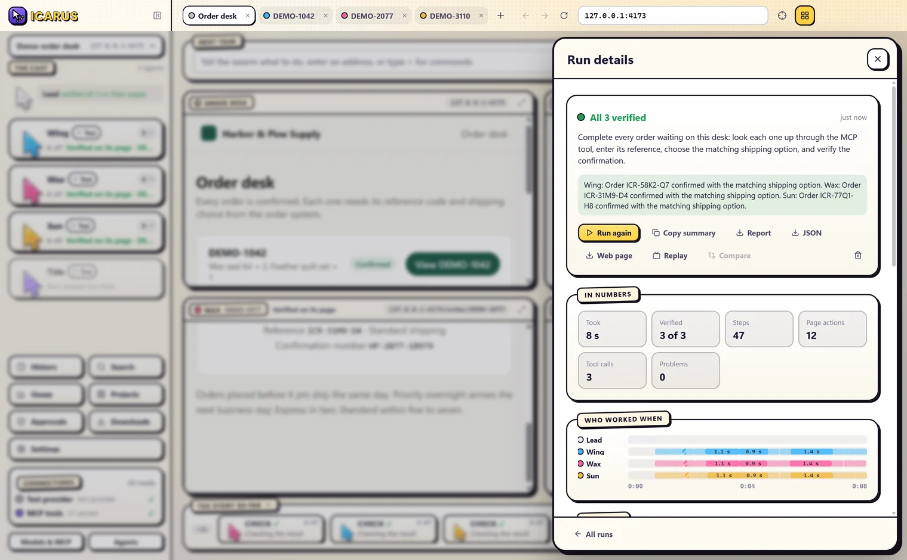
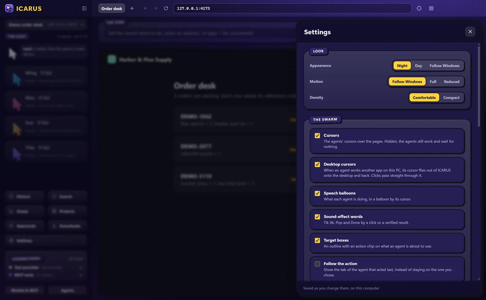
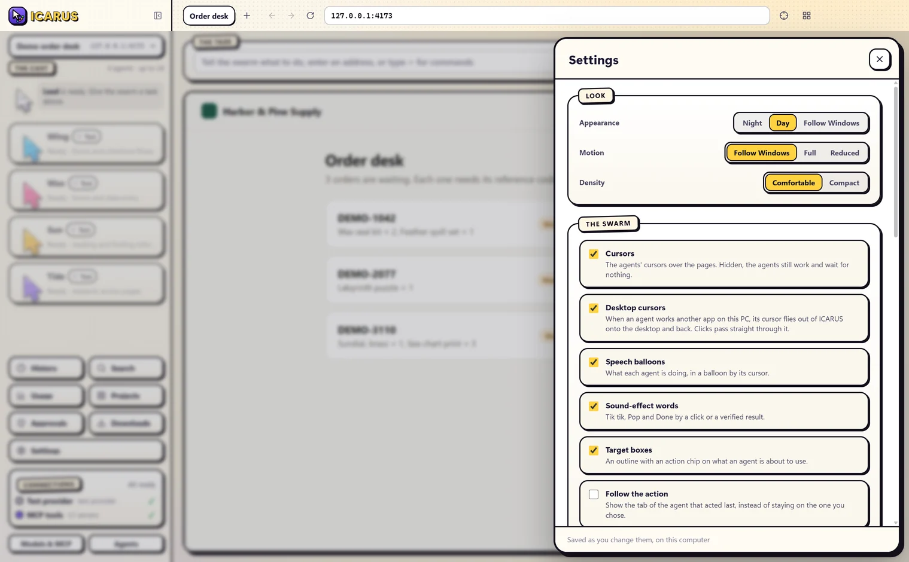
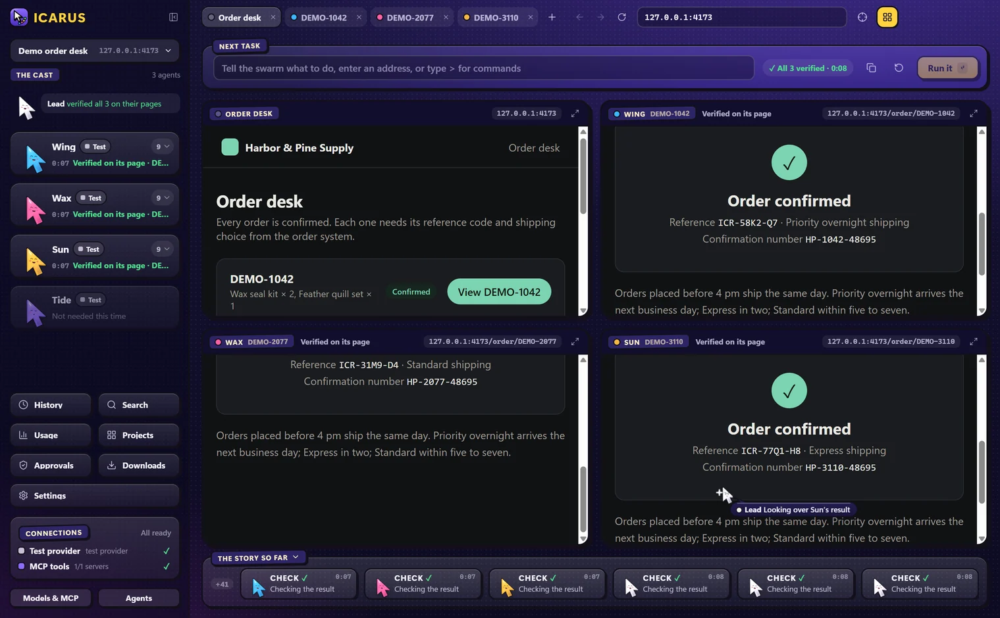
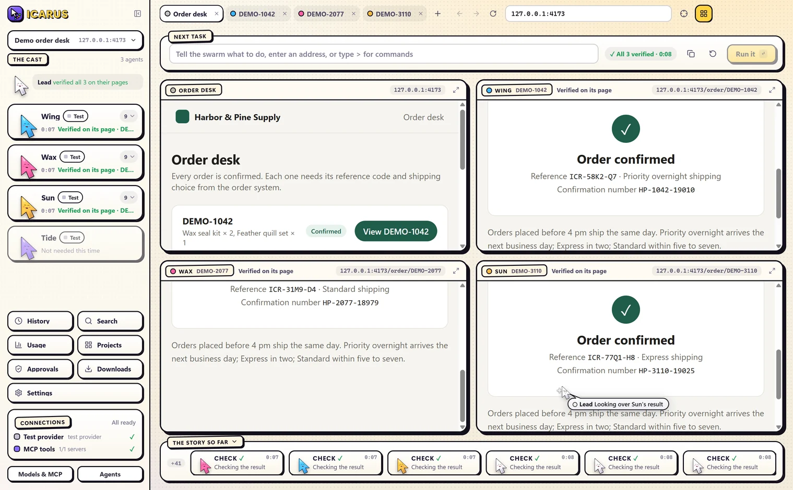

CartShippingPay
Desk lamp, brassQty 1 · from order #4821$48.00
- Shipping
- $0.00
- Total
- $48.00
StandardExpressPlace order
Vol. 1I Can Actually Run Useful Stuff
A desktop app where a swarm of visible cursors works your live web pages. A lead splits the task, every agent takes its own tab, and helpers join when everyone is busy.
Prologue
The lead calls them in. The roster takes the leading edge.
Helpers fill out the wings: up to 24 agents at once, each with its own cursor and tab.
Meanwhile, on a desktop near you…
Watch a run
The lead splits a real task. Wing, Wax, Sun and Tide take the first four, and when everyone is busy, helpers join with tabs of their own. Every result is checked on the page.
Rewind to Friday afternoon…
Episode 1
A webtoon in fourteen panels about one ordinary task and a swarm that refuses to guess. Every gag is a real feature.
Friday, 4:52 pm. One task. Forty-seven tabs.
ゴゴゴゴrumble
I just want to reorder a lamp…
…and log the cost. And find out when it arrives. And—
Hand me the mouse.
キラーンsparkle
It's all yours.
Leave it to us.
Wingforms & checkout
Waxdata entry
Sunreading
Tideresearch
ドドーン!da-da-dan!
ズバッslash!
One task. Eight small jobs.
カチッclick
カタカタclack clack
mcp · lookup_order #4821
プルルring ring
スーッscroll
Everyone busy? We're in!
ピョンboing
ガーンgaan
カチッclick
…looks again. Clicks.
シーンsilence…
Press it… again?
Absolutely. Not.
Held · uncertainゴゴゴmenace
バン!stamp!
8 of 8, all on the page. Nobody flew too close to the sun.
Sun is fine.
Later, behind the panels…
How it works
The lead splits your task into small jobs: one page, one goal, one check each. The roster takes them at once, helpers join when everyone is busy, and every result is checked where it landed before the run is called done.
1 The lead reads your task and the page.
Split it small.
2 Agents take the jobs, many at once.
ダッgo!
3 Each works its own tab, with real clicks.
カチッclick
4 Every result is checked on the page.
Verifiedバン!stamp!
Meanwhile, under the hood…
What it does
The models and tools run on your machine. The agents act through the real browser and report only what they can show on the page.
Runs on your own model.
Any OpenAI-compatible endpoint: LM Studio (auto-synced with your downloaded models), llama.cpp, Ollama or vLLM.
http://127.0.0.1:1234/v1 · model syncBring your own account!
Claude Code, Codex or Antigravity CLI (Gemini), already signed in. Pick models and reasoning effort per provider, lead or agent.
claude-code · codex · agyWork inside a designated local folder with live-reload preview, control desktop apps with live vision, and connect stdio or HTTP MCP servers.
workspace · desktop vision · mcp
API keys, env values and headers live in the local runtime; the app and its logs only see them masked.
apiKey: ••••••••
Dispatched through the Chrome DevTools Protocol, not simulated by scripts in the page.
Input.dispatchMouseEvent
Just before each press the target is found again. If the page changed, the agent re-targets or re-reads.
e12 → re-resolved
Up to 24 agents and cursors work together. Choose separate tabs or a shared preview where the whole swarm collaborates on one live page.
Agents at once: up to 24 · shared preview
A submit with no clear answer is held as uncertain. It is never sent twice.
uncertain · held
STOP means stop.
One press aborts model requests, cancels MCP calls and dispatches nothing more, for every agent.
notifications/cancelledShow me the page.
A run is done only when the evidence each agent reports is found on the page.
evidence · foundMeanwhile, in the workshop…
New in v1
Two batches, each item built into ICARUS v1 and checked in the running app. All of it is out now in ICARUS 1.0.0, the download below.
81new features
100quality-of-life fixes
Showing 181 of 181
F1Run history survives restarts the last 50 runs are saved in the profile folder
F2History sheet (Ctrl+H) every past run of the project with outcome, verified count, duration and when
F3Run details the task, the lead's plan, each subtask's result and evidence, and every step
F4Run timeline each agent's activity as bars on one clock
F5Run stats duration, steps, page actions, tool calls, problems, time per agent
F6Run again start any past task again in one click
F7Export a run as a Markdown report
F8Export a run as JSON
F9Step log filters by agent, by kind, problems only, and text search
F10Delete one run from history, or clear it
M1Schedules run a saved task every N hours or daily at a time, while ICARUS is open; an unattended run never gets a command approved for it
M2Pause and resume a run agents finish the action in hand and wait; Stop still works while paused
M3Supervised mode (per project) approve each page action before an agent does it
M4Review the plan first (per project) see the lead's subtasks, edit titles and instructions, reassign agents, then start or cancel
M5Retry only the failed subtasks of a past run
M6Automatic retry a failed subtask gets one more try before the run gives up on it (per project)
M7Run budgets a time limit and a step limit per run (per project)
M8Live hints send a message to one agent or to all of them while they work
M18Search every run (Ctrl+Shift+F) tasks, steps, tool results and summaries across projects
M19Usage dashboard runs per day, how many verified, time taken, busiest agents and models
M20Compare two runs side by side
M21Replay a run play its story back step by step with a scrubber
M22Shareable report one self-contained HTML file with the timeline, plan, evidence and steps
M23Results table every subtask's outcome, summary and evidence, copied or saved as CSV
F11Saved tasks per project name a task and keep it with the project
F12Task variables {{name}} in a saved task asks for its value before the run
F13Task queue tasks added while a run goes start one after another
F14Multi-line tasks Shift+Enter adds a line and the bar grows
F15Commands in the task bar type > for actions (switch project, open a sheet, theme, new tab…)
F16Ctrl+Shift+P opens the commands directly
F17Role presets for agents Forms, Reader, Researcher, Checker, Navigator
F18Duplicate an agent
F19Reorder agents (move up and down)
F20Duplicate a project
F21Export a project to a file (no secrets) and import one
F22Bookmarks per project save the current page, open it from the menu or the commands
F23Switch projects with Ctrl+1 … Ctrl+9
M9Per-agent instructions the agent always follows
M10Project notes the lead and every agent read first (no secrets: they are redacted from history)
M11Agent library keep an agent and add it to any project
M12Model failover a backup connection per project for subtasks whose model fails; never a local model that is not loaded; the run says which connection answered
F24Find in page (Ctrl+F) with match count and next/previous
F25Save a snapshot of the stage, or of one tab, as a PNG
F26Reopen a closed tab (Ctrl+Shift+T)
F27Duplicate a tab
F28Tab menu (right-click) reload, duplicate, copy address, open in your browser, close others, close to the right
F29Open the current page in your default browser
F30Site icons in tabs
F31Maximise one panel while the tabs are tiled, and restore it
F32Follow mode the stage shows the tab of the agent that acted last
F33Tile layout automatic, two columns or three columns
M13Separate sign-ins per project (opt-in) its tabs keep their own cookies and storage
M14Element picker point at something on the page to mention it in the task
M15Tab sessions save the open tabs under a name and open them again later
M16Downloads files the pages download land in Downloads\ICARUS and are listed, with Show in folder
M17Phone view per tab a phone-sized page with a phone browser's identity
F34Show or hide the cursors
F35Speech balloons on or off
F36Sound-effect words (Tik tik, Pop) on or off
F37Cursor size small, normal or large
F38Target boxes on or off
F39Desktop notification when a run ends while ICARUS is in the background
F40Taskbar progress during a run, red when it fails
F41The taskbar button flashes when a run ends in the background
F42The window title shows the project and the run's progress
F43Optional chime when a run ends
M24Workspace files browse the designated folder and read files, without leaving ICARUS
M25Approvals log every command and program the agents asked for, and what you said
M26Export and import all settings (projects, roster, connections and MCP servers, never keys), with the risky switches off on import
M27Projects overview every project with its last outcome, runs and success rate, one click to open or run again
M28First-run tour that points out the cast, the task bar, the tabs and the settings
M29Mini mode a small always-on-top window with the run's progress and Stop while you work elsewhere
M30Tray icon the run's state at a glance, Show ICARUS and Stop the run
F44Settings sheet (Ctrl+,) appearance Night, Day or follow Windows
F45Motion full, reduced or follow Windows
F46Density comfortable or compact
F47Keyboard shortcuts sheet (press ?)
F48About version, Electron and Chrome versions, config path, open the config folder, copy diagnostics
F49Test every connection at once and see each one's state and how long the check took
F50MCP tool browser search the tools of every server, with descriptions
F51When an agent works another app on this PC, its cursor flies out of the ICARUS window onto the desktop in one continuous motion, shows its clicks and typing there, and flies back; clicks pass straight through it, and Windows' one real mouse means the agents' actual input takes turns
Q1Ctrl+Enter runs the task, also in a multi-line task
Q2Up arrow in an empty task bar brings back the last task
Q3Clear button in the task bar
Q4Recent tasks narrow down as you type
Q5Remove a recent task from the list
Q6Esc clears the text first, then leaves the bar
Q7Stop shows "Stopping…" until the run has stopped
Q8Ctrl+. stops a run, as Esc does
Q9Clicking the outcome opens that run's details
Q10Run again button next to the outcome
Q11Copy the result summary
Q12Failed subtasks counted in the progress text
Q13The progress bar shows failed subtasks in red
Q14The task bar shows how many tasks are queued
Q15Drop text or a link on the task bar to fill it
R9Clear all recent tasks (command)
R10The task bar counts characters near the 4000 limit
Q16An agent card's tooltip shows its whole current line
Q17An open step list follows the newest step
Q18Copy an agent's steps
Q19Step lists show how long each step took
Q20Clicking a resting agent opens the roster
Q21Click the lead's line to read all of it
Q22The rail head counts working and resting agents
Q23Collapse the rail to portraits with a button (remembered)
Q24Model chips show the full model id on hover
Q25The connections pill lists every problem on hover
R11Right-click an agent card for its tab, its steps and the roster
R17The connections pill shows when connections are being checked
Q26Middle-click closes a tab
Q27When the tabs do not fit, the mouse wheel scrolls the tab strip sideways
Q28Ctrl+T opens a new tab
Q29Ctrl+W closes the tab
Q30Ctrl+Tab and Ctrl+Shift+Tab move between tabs
Q31Ctrl+L goes to the address bar
Q32F5 or Ctrl+R reloads; Ctrl+Shift+R reloads past the cache
Q33Alt+Left and Alt+Right go back and forward
Q34Tabs show when their page is loading
Q35Tab tooltips show the page title and full address
Q36The address bar marks plain http pages as not secure (local pages excepted)
Q37Copy the page address (Ctrl+Shift+C or the tab menu)
Q38A new tab puts the cursor in the address bar
Q39Closing a project's last tab opens its start page again instead of leaving the stage empty
R2Drag tabs to reorder them
R3Pin a tab it stays first and has no close button
R18Middle-click a bookmark in the project menu to open it in a new tab
Q40A page that failed to load shows a Retry button
Q41An empty tab offers the start page and the project's bookmarks
Q42Panel heads show a thin loading bar
Q43Ctrl+G tiles or untiles the tabs
Q44Double-click a panel head to maximise it
Q45Panel heads show the page title on hover
Q46Click a frame to show that agent's tab
Q47The strip says how many earlier steps are not shown
Q48Collapse the story strip (remembered)
Q49Frame tooltips show the whole step and any error
Q50Hovering the strip holds it still so a frame can be read
R4History filters by outcome
R5History rows work with the arrow keys and Enter
R6Export the History list as CSV
R7Run details jump to the first problem step
R12Copy a past run's task from its History row
R14Esc in run details goes back to the list
R15Ctrl+Shift+H opens the newest run's details
R19Run again from a History row
R20Timeline bars say how long each step took
Q51Ctrl+S saves the project sheet
Q52Closing the project sheet with unsaved changes asks first
Q53Deleting a project, connection or MCP server asks first; removing an agent can be undone
Q54Tab stays inside an open sheet, and focus returns to where it was when it closes
Q55Colour swatches for agents, one click each
Q56Switch all agents on or off at once
Q57Minus and plus buttons for "Agents at once"
Q58The start page and allowed sites are checked as you type
Q59Copy the config path
Q60Copy an MCP server's log
Q61Search the tools of an MCP server
Q62Removing a connection says which agents use it
Q63Saving says so
Q64Testing the lead's model shows the response time
R8Duplicate a saved task
Q65Short notices for saves, copies and errors that go away by themselves
Q66A dashboard error shows a Reload button instead of a blank window
Q67Buttons with a shortcut name it in their tooltip
Q68History shows relative times ("4 min ago") with the exact time on hover
Q69Counts and clocks use even-width figures so they do not jitter
Q70Agent cards show how long the agent has been working
Q71The tile choice is remembered per project
Q72ICARUS reopens at its last window size and position
Q73Double-click a step to copy it
Q74Addresses in steps and tool results open in a new tab when clicked
Q75Long tool results expand when clicked
Q76Agent cards count their problems when steps go wrong
Q77Scrollbars match Night and Day
Q78Notices and menus follow the motion setting
Q79The command list shows each command's shortcut
Q80Copy a subtask's evidence from the run details
R1Closing ICARUS during a run asks first
R13Close the lead's tabs after a run (setting)
R16A notice when a scheduled task starts or has to wait
Nothing matches that. Try another word, like tab
or history
.
Inside the machine…
Inside the app
ICARUS 1.0.0 as it ships: the swarm at work, the agents you give it, the models it runs on, what a run leaves behind and how you set it up.











And now, your turn…
Download
Version 1.0.0 for Windows 10 and 11, 64-bit. It runs on your own machine, with your own models.
Heads up: ICARUS isn't code-signed yet, so Windows SmartScreen may warn the first time. Choose More info, then Run anyway.
%APPDATA%\ICARUS and carry over from 0.1.0.From source
You need Node 22 or newer and a local model behind an OpenAI-compatible API. The defaults match LM Studio on 127.0.0.1:1234.
1Install
npm installFetches the dependencies, once.
2Launch
npm startBuilds and opens the app, and starts the demo automatically.